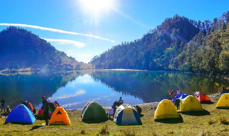
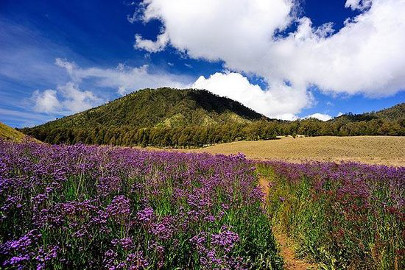
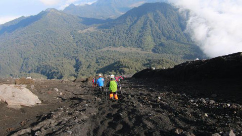

Gunung Semeru adalah gunung berapi kerucut aktif. Gunung Semeru dengan puncaknya Mahameru merupakan gunung tertinggi di Pulau Jawa. Gunung Semeru masuk dalam kawasan Taman Nasional Bromo Tengger Semeru dan untuk melakukan pendakian harus melakukan booking online terlebih dahulu.
Pendakian Gunung Semeru dimulai dari desa Ranu Pani. Jalur awal menyusuri lahan perkebunan kemudian menyusuri lereng bukit yang cukup jauh sekitar 10km namun cukup landai hingga menuju Ranu Kumbolo yang merupakan danau dan tempat camping yang populer. Banyak pendaki yang datang tidak untuk mencapai puncak Gunung Semeru melainkan untuk bermalam di Ranu Kumbolo untuk menikmati keindahannya.
Setelah Ranu Kumbolo pendaki akan melewati padang rumput luas yang dinamakan oro-oro ombo. Pada bulan Januari hingga Agustus dapat ditemukan tanaman Verbena Brasiliensis berwarna ungu di oro-oro ombo. Bunga yang kelihatannya indah tersebut sebetulnya tidak baik karena sifatnya yang menyerap banyak air dapat menyebabkan daerah di sekitarnya kekeringan.
Dari oro-oro ombo pendaki kemudian memasuki hutan cemara dan kemudian menuju pos Kalimati yang merupakan padang rumput luas di tepi hutan cemara. Pendaki disarankan untuk mendirikan tenda di Kalimati sebelum melakukan summit attack. Dari Kalimati pendaki akan melewati Arcopodo yang merupakan wiliayah vegetasi terakhir di Gunung Semeru. Jalan seterusnya menuju puncak dari Arcopodo merupakan bukit pasir yang curam dan mudah merosot. Pendaki disarankan menggunakan penutup hidung dan tidak menuju puncak terlalu siang karena pada siang hari angin akan membawa gas beracun dari kawah Semeru ke arah puncak.
Ketika turun dari puncak Gunung Semeru pendaki diharuskan sangat berhati-hati baik karena cuaca buruk atau ketika sedang asik menuruni bukit seperti berseluncur di pasir, pendaki tanpa sadar menyimpang dari jalur yang seharusnya dan akhirnya terjatuh ke zona blank 75 yang merupakan jurang sedalam 75 meter.